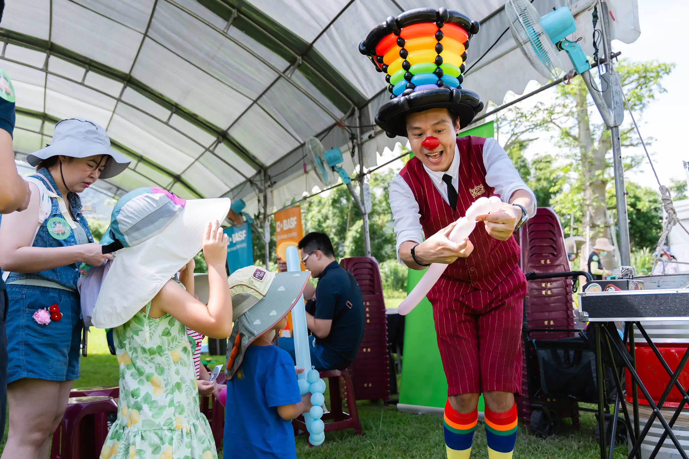
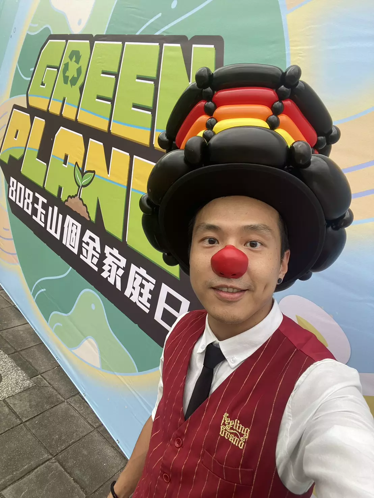
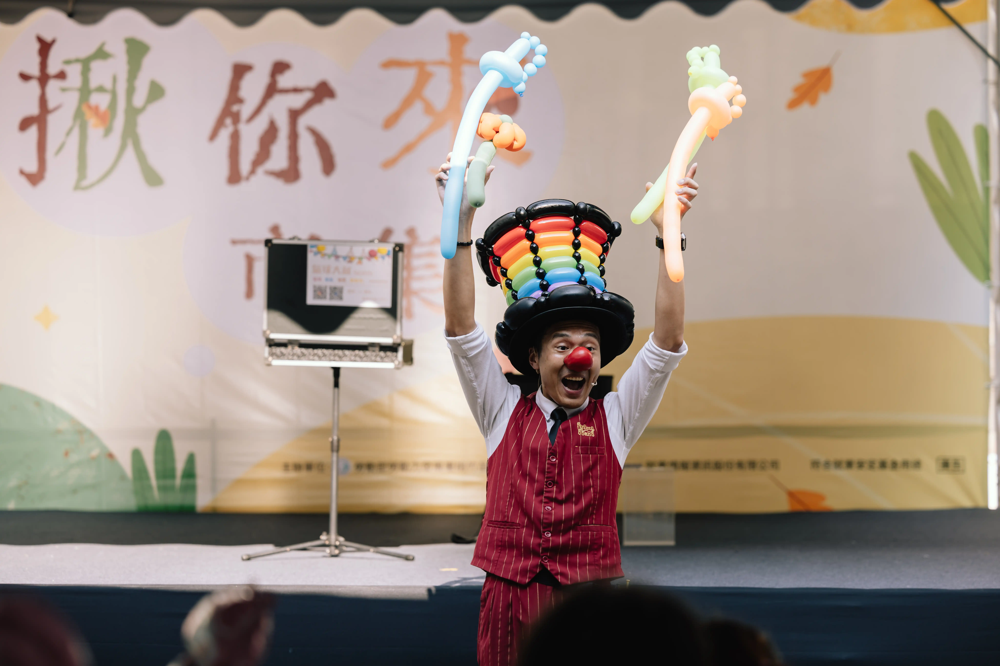
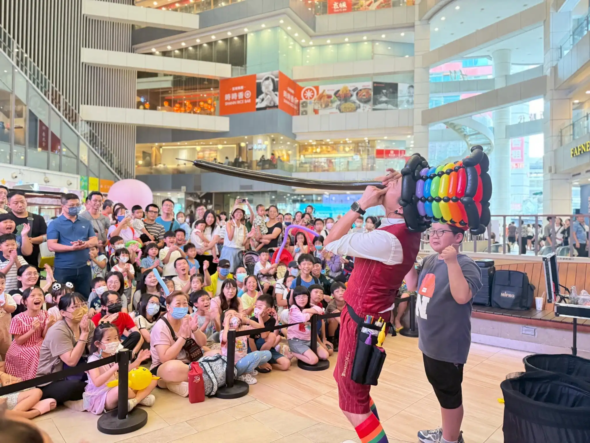

企業家庭日 / 品牌活動整合方案
互動表演 × 氣球迎賓 × 活動聚客，一次安排更省心
不知道企業家庭日或品牌活動該怎麼安排，才能兼顧現場氣氛、品牌畫面與親子互動？氣球大叔 Sony 的企業家庭日 / 品牌活動整合方案，將互動表演、造型氣球互動、迎賓安排與聚客型活動內容整合在同一套流程裡，讓主辦單位不用分別找節目、想流程、顧現場，一次就能完成一場有笑聲、有停留效果、也有品牌記憶點的活動。
無論是企業家庭日、百貨商場活動、品牌快閃、公部門推廣、開幕活動或節慶檔期，都能依照場地大小、人流規模、活動目標與品牌需求安排最適合的內容。從主舞台互動到定點迎賓、品牌主題氣球與聚客動線，都能彈性調整。
🏢 這頁適合哪幾種企業 / 品牌活動？
- 企業家庭日 / 員工親子活動： 兼顧大人質感與小孩樂趣，讓員工家庭滿載而歸。
- 百貨商場 / 品牌快閃活動： 創造現場排隊人潮，提升商場與櫃位的停留時間。
- 公部門宣導 / 城市推廣活動： 以親民、熱鬧的表演形式，吸引市民目光並協助政策宣導。
- 開幕活動 / 店慶 / 周年慶： 用互動內容快速帶起現場氣氛，讓活動一開始就更容易聚集人潮。
- 運動會 / 大型戶外活動： 解決大場地人流分散問題，集中觀眾注意力。
- 節慶檔期活動（聖誕 / 中秋 / 春節）： 融入節日主題，打造專屬的節慶品牌記憶點。
⏱️ 活動流程怎麼安排最剛好？
- 開場暖場 / 迎賓互動： 於入口處或周邊定點，用氣球與微魔術破冰，引導人流進入主會場。
- 主舞台互動表演： 高張力的魔術秀，集中全場目光，穩定現場活動主軸。
- 品牌 / 親子參與橋段： 邀請長官、員工或民眾上台互動，自然融入品牌元素。
- 氣球互動 / 定點派送 / 品牌造型： 於活動中後段發送精美氣球，拉長賓客停留與參與時間。
- 合影拍照 / 品牌記憶點收尾： 以大型氣球作品或歡樂畫面收尾，創造社群打卡分享效益。
✨ 為什麼企業與品牌活動適合找氣球大叔？
- 現場聚客能力： 豐富的街頭與商演經驗，能在短時間內聚集人潮並維持熱度。
- 大型活動經驗： 熟悉中大型活動的人流節奏與現場互動安排，能依活動規模調整最適合的呈現方式。
- 可依品牌需求客製： 靈活融入品牌色系、吉祥物或宣傳口號，提升行銷價值。
- 兼顧孩子與家長： 讓小孩看得開心，同時用幽默節奏讓大人也覺得有質感、不幼稚。
- 流程穩定好配合： 熟悉活動企劃痛點，時間掌控精準，是公關公司與承辦人的好隊友。
- 服務整合度高： 可單一窗口搭配迎賓、舞台主秀、定點派送與品牌主題佈置，省去發包麻煩。
📍 企業家庭日 / 品牌活動實例與場地安排參考
我們將最具代表性的企業家庭日、品牌快閃、百貨商場與大型活動實績整理如下，幫助您快速找到最適合的活動安排方向。不同場地與活動目標適合不同形式：想要強化親子參與可安排家庭日與員工活動，想要聚集人潮與提升停留時間，則很適合百貨商場、品牌快閃與節慶檔期活動。
-
企業家庭日 / 員工親子活動
🎈 德州儀器 TI：員工家庭日氣球互動與派送
針對科技業家庭日的高參與度需求，規劃互動性強的定點氣球派送服務，提升員工家庭的活動體驗與幸福感。
-
企業家庭日 / 氣球互動與派送
🎈 巴斯夫 BASF：員工家庭日氣球互動與派送
精緻且快速的氣球，協助外商企業營造歡樂且富有質感的活動氣氛，讓各年齡層賓客皆能投入。

👉 BASF 巴斯夫員工家庭日｜氣球互動與派送 -
大型活動 / 運動會 / 人流聚客
🎈 台積電 TSMC：運動會氣球達人定點互動
在千人規模的大型運動會中，展現極高的人流處理能力，透過高效造型氣球互動，維持攤位熱度與排隊秩序。
-
企業迎賓 / 品牌形象
🎈 玉山銀行：家庭日迎賓氣球互動
配合金融機構專業形象，提供具備禮儀與溫度的迎賓氣球服務，讓賓客從入場第一秒就感受到活動的用心。

👉 玉山銀行家庭日｜高品質迎賓氣球互動與氛圍營造 -
百貨商場 / 創業展聚客
🎈 新竹 Big City：創業成果展氣球聚客人潮
展示如何在百貨商場內創造高度集中的停留效果，透過造型氣球製作吸引家庭客群，成功帶動展位曝光量。
-
品牌快閃 / 百貨互動
🎈 新竹 SOGO：品牌推廣快閃活動氣球互動
結合特定品牌宣傳需求，在百貨櫃位現場進行高精緻度的氣球捏製，強化品牌與消費者的親近感與互動頻率。

👉 新竹 SOGO 品牌推廣活動｜精緻造型氣球與百貨互動紀錄 -
商場周年慶 / 全員慶典
🎈 IKEA 桃園店：周年慶互動魔術氣球秀
為大型居家通路周年慶設計專屬表演，將魔術、氣球與商場氛圍結合，打造全館皆可感受到的節慶歡樂感。
-
商場引流 / 舞台演出
🎈 台中大魯閣新時代：商場引流互動演出
於商場開放式舞台區進行互動表演，透過高視覺感的橋段吸引過路人潮駐足，有效提升商場區域的聚客力。

👉 台中大魯閣新時代｜百貨商場聚客魔術秀與氣球互動回顧


企業 / 品牌活動常見問題 FAQ
Q：企業家庭日人數很多也適合安排嗎？
A：沒問題！我們具備豐富的大型活動控場經驗。針對百人以上規模，會以主舞台大型視覺魔術搭配互動引導，確保全場都能感受氣氛；也可依活動規模調整互動與派送安排，避免現場排隊過長影響體驗。
Q：百貨商場或品牌活動可以配合主題客製嗎？
A：可以。我們能夠根據品牌形象、企業吉祥物或活動宣傳主題，客製專屬的造型氣球或魔術橋段，在互動中加深參與者對品牌的記憶點。
Q：活動場地在戶外、商場或展場都可以安排嗎？
A：都可以。我們能適應百貨中庭、戶外廣場、飯店宴會廳或世貿展場等不同環境。只要有基本的空間，我們都能彈性配合場地動線進行演出或迎賓。
Q：除了舞台表演，也能安排迎賓或定點互動嗎？
A：當然！除了集中注意力的主舞台魔術秀，我們也非常推薦安排「迎賓互動」或「定點氣球派送」，這能有效拉長賓客在現場的停留時間，發揮極佳的聚客效果。
Q：是否能配合節慶檔期或品牌宣傳主題調整內容？
A：可以。大叔可配合萬聖節、聖誕節、春節或週年慶等檔期，調整表演內容、互動口白與氣球造型，讓活動完美融入節慶氛圍與宣傳主軸。
Q：如果活動流程只有 30～60 分鐘，怎麼安排最有效？
A：針對短時間的流程，我們建議安排「高互動舞台魔術（約20-30分鐘）＋快速造型氣球派送」，在最短時間內將現場氣氛炒熱，並讓賓客帶著品牌記憶點滿意離開。
🎉 想安排一場有互動、有停留效果、也有品牌記憶點的活動嗎？
企業家庭日、品牌快閃、百貨活動、開幕宣傳與節慶檔期，都能依人流規模、場地條件與活動目標安排最適合的方案。
📝 詢問格式：日期 / 地點 / 活動性質 / 預估人數 / 場地型態 / 預算範圍
💬 點我加 LINE 討論活動方案
✨ 活動承辦請放心：大叔團隊熟悉企劃流程，不僅好配合，更能幫您把現場氣氛穩穩顧好！